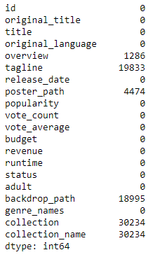
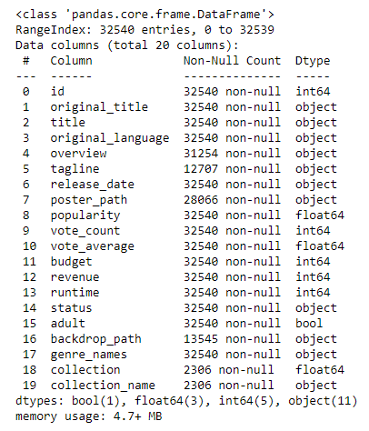
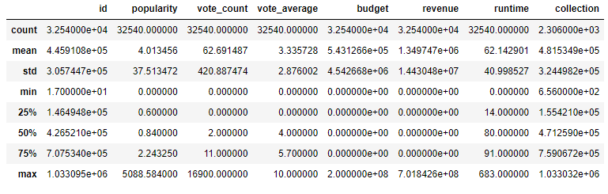
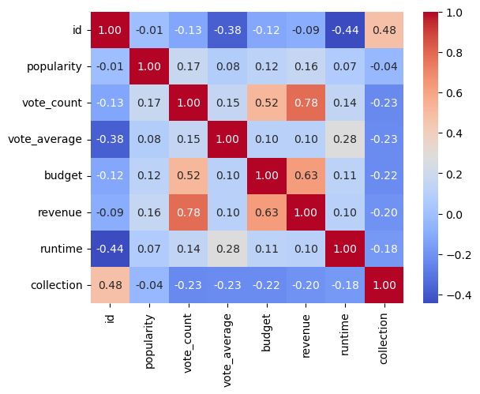
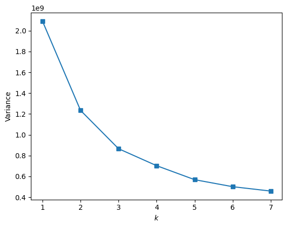
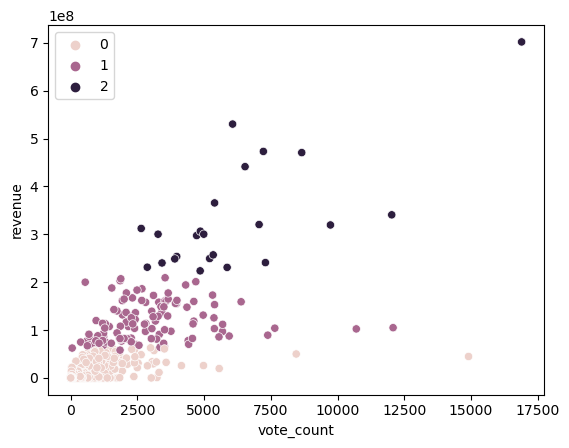

Project 4: Clustering Horror Movies
Introducing The Problem
I've watched horror movies ever since I was a kid. Over the years, it's become increasingly challenging to discover ones I haven't already seen. As my list of viewed mainstream movies expands, I find myself delving deeper into niche movies. Although, I don't want to spend half of a movie just to figure out if I'll enjoy it or not. The main question I have is can I utilize clustering to identify horror movies I haven't watched and might enjoy?
What Is Clustering?
Clustering is a machine learning technique that involves grouping data points. Data points in the same group have similar properties, while data in different groups have dissimilar properties. In this project, I'm going to use a specific type of clustering called K-Means clustering. For K-Means Clustering, we must first decide how many clusters we want to have. We can decide on this by using what's called the elbow method. The elbow method calculates and graphs the sum of the square distance between points in a cluster and the center of the cluster. It does this for a range of clusters, usually 1-10, and the number of clusters is decided on which K in the graph represents an "elbow". After deciding on how many clusters we want to have in our model, we randomly initialize the centroids of each cluster. Each data point is categorized by calculating it's distance between each centroid and classifying the point to be in the group whose center is closest. After all data points are clustered, the center of each cluster is recalculated by taking the mean of its data points. This process is repeated until the clusters stop changing.
Introducing The Data
I found my dataset on Kaggle. The dataset includes horror movies dating back from the 1950s. The data includes 32,540 rows and 20 columns. The columns include:
- id
- original title
- title
- original language
- movie description
- movie tagline
- release date
- a URL path to the poster
- popularity (as of September 2023)
- vote count (number of ratings)
- vote average
- budget
- revenue
- runtime in minutes
- status (e.g., released)
- genre
- collection id
- collection name (series name)

Data Pre-Processing
Checking for nulls, given that most of the nulls are in columns that won't be necessary for this project, I'm going to drop the null values.
The data is well-structured and contains the information I need, so that will be it for pre-processing.
Data Visualization
In this step, I will be delving deeper into the data to get a better understanding and pick out features to use in my clustering model.
As you can see, there are many object types, most likely referring to the string values of each movie.
Given from this graph, the movies in this dataset contain, on average, 62 votes and a 3.34/10 rating.
Next, I'm going to use a heatmap to choose features in our clustering model.
The strongest correlation seems to be with revenue and vote count which makes sense. High revenue movies tend to have more ratings, whether good or bad. Budget and revenue also have a correlation, suggesting that the higher a movie budget, the more generated revenue.
From this heatmap, my chosen features are going to be revenue, vote count, and budget. I'm also going to include popularity and vote average, as I'm curious to see how these two features will affect our clusters.
Modeling
I'm going to be using K-Means clustering over agglomerative clustering due to having a large dataset (agglomerative clustering is resource-intensive). Also, agglomerative clustering is more sensitive to outliers. From our data visualization section, we see that on average, movies have a rating of 3.3/10 and the highest movie rating is a 10/10. The average vote count is 62 with the highest vote count being 16,900.
As I stated before, I'm going to be using revenue, vote count, budget, popularity and vote average for our features.
Before we can train our model, we have to specify the amount of clusters, K, we want. We can decide on an amount using the elbow method, as mentioned before.
I'd say the elbow point would be at 3, because the variance decrease rate starts to flatten out.
Clustering Analysis
It seems that movies are clustered based on how much revenue they generated. Using the interactive cluster, in the jupyter notebook linked below, I was able to gain some more insight on which specific movies were in each cluster. There are two main outliers: It (2017) and The Shining. One surprising piece of information is The Shining being clustered in cluster 1 (low revenue) despite having the second highest vote count at almost 15k and a vote average of 8.2/10. This suggests that as time went on, the movie gained appreciation. Pointing back to my motivation for this project, I'm able to find horror movies that I have not watched before. Just out of cluster 3, this includes the Resident Evil series, The Meg, the Alien series, and others.
Impact
An impact this project could have is discovering new movies that you may end up loving. A negative impact could be placing too much emphasis on mainstream blockbusters. The intention of this was to find lesser-known horror movies but I can see how people can overlook this.